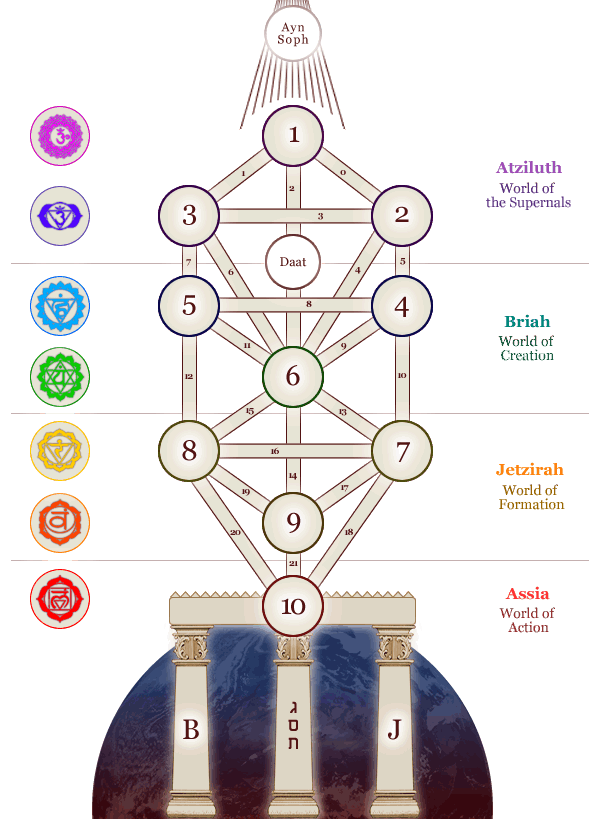

The Tree of Life
The kabbalistic tree of life, the Etz Chaim (Hebrew עץ חיים), is
a central system of the Kabbalah and it describes the manifestations of the
divine creation in the book of the formation, the Sefer Jetzirah (Hebrew יצירה
ספר). The tree of life is sub-divided into several levels of the ten primal
numbers, namely the Sefirot (sing. Sefira), which are linked by the 22 paths.
These paths correspond to the 22 letters of the Hebrew alphabet.
The primal light, the Ayn Soph (or En Sof), forms the first stage, and could
also be described as the infinite light of God, the first motivation of God's
creation, or rather the first movement of “the God” outside of God; the largest
being of the world, which is way beyond the grasp of the human mind. Due to its
contraction and expansion, the Sefirot and therefore all appearances of
existence come into being. They are to be found within the four worlds, which
are: Assia, the world of action, Jetzirah, the world of formation, Briah, the
world of creation and the supernal world of Atziluth.
The highest Sefira Kether, represents the presence of God within creation, while
the lowest Sefira Malkuth, describes matter (the mundane, our planet). Between
these two entities, there is the human consciousness, which is held within the
Sefira Tiferet. Between the conciousness and the mundane lies the subconscious
World represented by the Sefira Yesod.
In the tree of life, between the pure consciousness and the subconscious, we
find the mental activity: on the left, in Sefira Hod, the analytical thinking,
and on the right the Sefira Netzach, which stands for the creative thinking.
The right side of the Etz Chaim thus describes the female, receiving principle,
which is characterized by the Sefirah Chokmah, while on the left side we can see
the male, bestowing principle, which is manifested in the Sefira Binah (the
right side of the tree corresponds to the left side of the human body and vice
versa). There are seven mundane Sefirot (Malkuth, Yesod, Netzach, Hod, Tiferet,
Geburah, Hesed) and three heavenly or divine Sefirot (Binah, Chokmah, Kether)
who are separated from each other.
The perception (Daat) bridges the divine and the mundane - heaven and earth. At
the bottom of my illustration, you find three pillars, which stand for hardness
(Binah, Geburah and Hod), mildness (Kether, Tiferet, Yesod and Malkuth) and
mercy (Chokmah, Hesed and Netzach). To the left of the tree one can see the
seven levels of human existence, which correspond to the chakras known from the
asian-indian tradition.

Source: http://www.rodurago.net/en/index.php?site=lebensbaum&rck=b432d951969668221b9c417349b53e2a